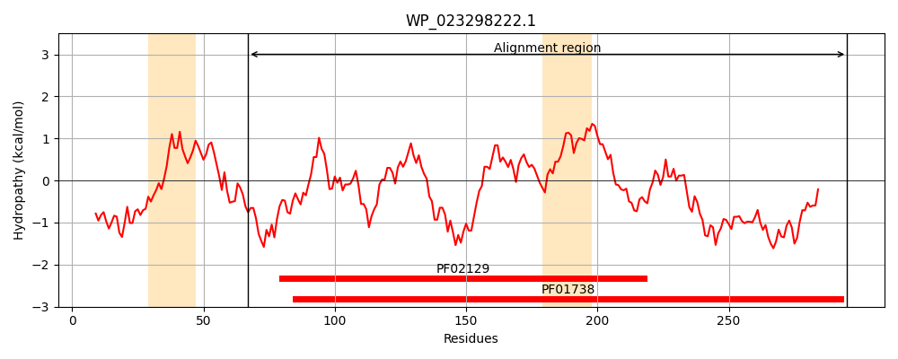
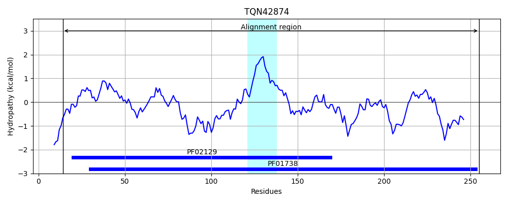
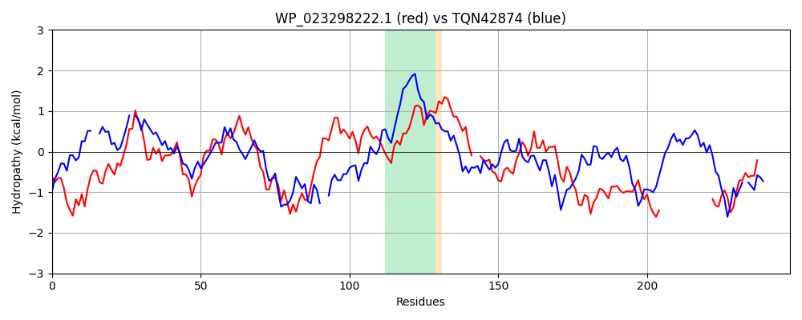

Hit Accession: TQN42874
Hit TCID: 4.C.3.1.14
Hit Description: gnl|BL_ORD_ID|20335 gnl|TC-DB|TQN42874.1|4.C.3.1.14 carboxymethylenebutenolidase [Blastococcus colisei]
Mach Len: 248
e:0.000000
Query TMS Count : 2
Hit TMS Count: 1
TMS-Overlap Score: 0.650000
Predicted Substrates:None
BLAST Alignment:
Score: 138 , Bit scores: 57 bits, E-value: 8.3e-10, Alignment length: 248, Percentage identity: 25
Query: 67 DIRPEYIHYPSPDGHGEVRAYLVTPTKIADKAPAVVVVHENRGLNPYIEDVARRVAKAGYIALAPDGLSAVGGYPGNDDEGRALQQKVDPVKLMNDFFAAVAFMAKHPQATGKVGITGFCYGGGVSNAAAVAIPELACAVPF--YGRQPPLKEVDKIKAPLLLHYAGLDSGINEGWPAYEQALKEHHKVYEAYLYQGVNHGFHND-----------------STPRYDRAAADLAWQRTLAWFEKYLR 295
D+ P + P+P G + A++ P A P VVV+H+ G++ + A +A AGY+A+APD R ++ P +D A ++A P TG++G+ GFC GGG + A A +V + + +E P++ Y D G E+ L ++ Y H F ND P ++ +A D A R L +F+ +LR
Sbjct: 14 DMTPGEVTIPAPGG--PLPAHVAVPPG-AGPWPGVVVLHDMAGMSRDLRSQADWLAGAGYLAVAPDLFRGNRRATCIFRMMRETWRRQGPT--FSDIEAVGRWLADRPDCTGRIGVIGFCLGGGFALLLAAEHRFDAASVNYGPVSTKVYSEETFTGACPVVGSYGAKDPGNRGVGERLERILTAVGVEHDVTTYPDAGHSFMNDHDSADLPALLAVLTRLTGNPYHEPSAHD-ARGRILGFFDHHLR 255 | Protein Hydropathy Plots: |
|---|
|  |  |
Pairwise Alignment-Hydropathy Plot:
|
|---|
|  |